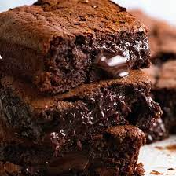

Red Velvet Cupcakes

This brownie recipe is sure to amaze your friends and family,if you're able to have any left for them after you try the batch.
I can't take credit for this recipe as it came from All Recipes.com.
Ingredients
- Cooking spray
- 1 1/4 cups white sugar
- 1/2 cup butter, melted and cooled
- 1 tablespoon vanilla extract
- 3/4 cup all purpose flour
- 1/2 cup unsweetened cocoa powder
- 1/4 teaspoon salt
- 1/4 teaspoon baking soda
- 2 eggs
- 1 cup semisweet chocolate chips
- 1/2 cup chopped walnuts
- 1 1/2 tablespoons all-purpose flour
Steps
- Preheat the oven to 350 degrees F (175 degrees C). Line a 2.2-quart glass baking pan with aluminum foil and spray with nonstick cooking spray.
- Combine sugar, butter, and vanilla extract in a bowl. Beat with an electric mixer until smooth and fluffy.
- Sift 3/4 cup flour, cocoa powder, salt, and baking soda together in a second bowl.
- Beat eggs, one at a time, into the sugar and butter mixture, until thoroughly combined. Add the flour mixture in 2 to 3 batches, mixing slowly until batter is just combined.
- Toss chocolate chips and walnuts with 1 1/2 tablespoons flour. Fold into the batter. Pour batter into the prepared baking pan and use a rubber spatula to level off the top.
- Bake in the preheated oven until edges are set and start to pull away from the sides of the pan, 20 to 30 minutes. Let cool until center firms up.
Return to homepage